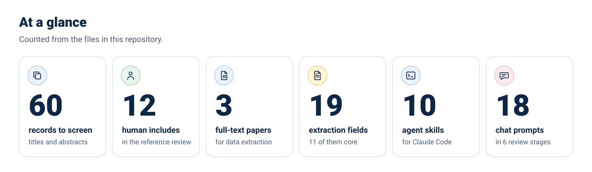
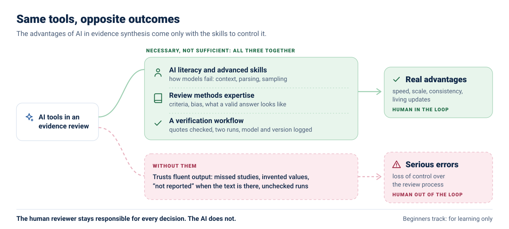
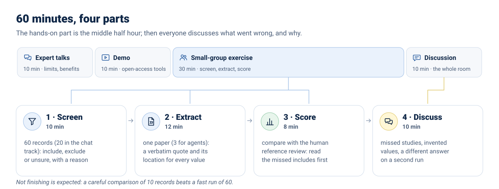
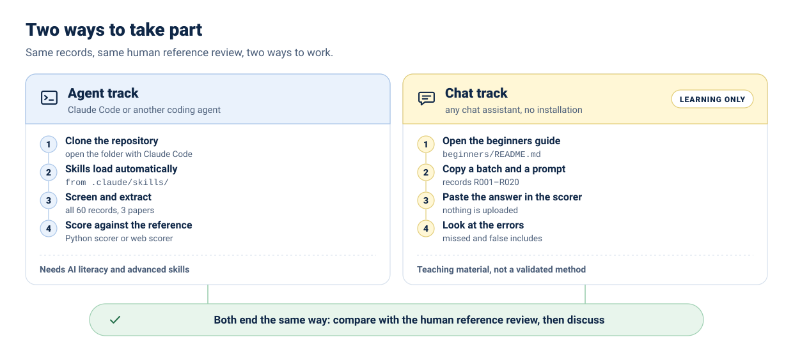
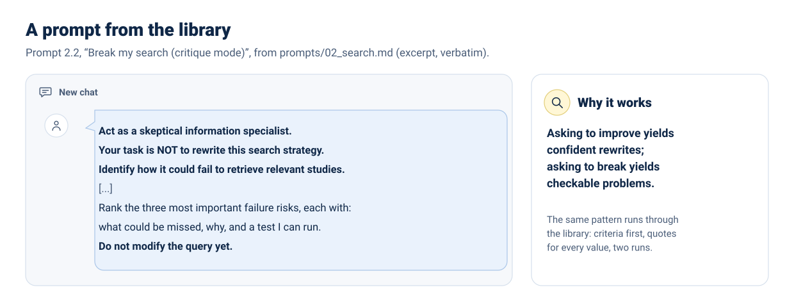

AI for evidence synthesis
Screening and data extraction with AI, checked against a systematic review done by humans. Hands-on materials from the EUPHA Digital Health and Artificial Intelligence Section.
An AI can screen all 60 records for you. Would you notice the ones it got wrong?

The advantages come only with the skills
AI can bring real advantages to evidence synthesis (speed, scale, consistency, living updates), but only to people with AI literacy and advanced skills. Those are necessary, not sufficient: they work together with review methods expertise and a verification workflow. Without them come serious errors and loss of control, and the human drops out of the loop. Human reviewers stay responsible for every decision.

For learning only. These prompts are teaching material for this workshop. They are not a validated method. If you are not confident with how large language models work (context windows, parsing, sampling, retrieval, hallucination) and with advanced techniques (structured outputs, verification against the source, reproducibility checks, documentation of model and version), do not use AI to conduct a real evidence review. You stay responsible for every decision: the AI does not.
How the session works
Two short talks (limitations first, with Patrick Boudreau; then benefits, with Francesco Baglivo), a demo of open-access tools, half an hour of hands-on work in small groups, and a structured discussion on performance, transparency, bias, human oversight and reproducibility. The live session took place on 12 November 2026 in Bilbao. Not there? Do the exercise on your own in 60 to 90 minutes: self-paced path.

The exercise
The question is deliberately uncontroversial, so the focus stays on the AI method: how effective are hand hygiene interventions in preventing healthcare-associated infections?
The reference standard is the review by Pruna et al. (J Clin Med, 2026): a systematic review of quasi-experimental studies in acute care hospitals, with 12 included studies, screened and extracted by two independent human reviewers without AI (doi:10.3390/jcm15103882). The choice is provisional; details and limits in activity/data/README.md. Open it after the exercise, not before.
Learning objectives
- Apply AI tools to screening and data extraction within a structured review workflow.
- Compare AI-assisted outputs with manual results and identify discrepancies.
- Critically assess risks, limitations and appropriate use of AI in evidence synthesis.
Choose your path
Same records, same human reference review. Pick the track that matches the tools you use.

Agent track: Claude Code and other coding agents
git clone https://github.com/fraba94/eph2026-ai-for-evidence-synthesis
cd eph2026-ai-for-evidence-synthesis
claudeThe skills in .claude/skills/ load automatically; AGENTS.md gives the same rules to other agents. For people with AI literacy and advanced skills.
Chat track: any chat assistant learning only
ChatGPT, Claude, Gemini, Copilot, Mistral or another assistant: no installation. Follow the beginners guide, copy the records from the records page, then score in the scorer.
Where AI can help, where a human must check

Hands-on activity
The 30-minute group exercise: screening and data extraction with AI, compared with a review done by humans.
Open the guide →AI beginners track
A copy-and-paste walkthrough for any chat assistant. learning only
Start here if you are new to AI →Records for your chat
The records in batches of up to 20, ready to copy into a chat. Missing abstracts are fetched from PubMed in your browser.
Copy a batch →Prompt library
18 prompts for chat assistants in 6 review stages, each with what to check afterwards and common failure modes.
Browse the prompts →Agent skills
Ten Claude Code skills that load automatically when you open the repository, and can be adapted to other agents.
See the skills →Score your results
Confusion matrix, sensitivity, missed includes and extraction accuracy. Runs in your browser: nothing is uploaded.
Open the scorer →
Full prompt, expected output and checks: prompts/02_search.md.
Read these first
Five starting points from the full list of 25 verified references: guidance, evidence, workload and human factors, tools.
- Guidance Flemyng et al., Campbell Syst Rev 2025. Joint position statement of Cochrane, the Campbell Collaboration, JBI and the Collaboration for Environmental Evidence: reviewers stay responsible, AI is used with human oversight and reported. doi:10.1002/cl2.70074
- Guidance Fleurence et al., Value Health 2026. ISPOR task-force good-practices report built on 115 empirical studies and expert consensus: AI inside human-in-the-loop workflows, not autonomous reviews. doi:10.1016/j.jval.2026.08.007
- Evidence Adam et al., Res Synth Methods 2026. Living rapid review of 134 studies of AI tools for evidence synthesis; the authors conclude that no existing tool can replace human expertise. doi:10.1017/rsm.2026.10118
- Evidence Gartlehner et al., Ann Intern Med 2025. Study within 6 ongoing systematic reviews comparing extraction by Claude, verified by a human, with human-only extraction. doi:10.7326/ANNALS-25-00739
- Human factors Qazi et al., NEJM AI 2026. Randomised trial with 44 physicians trained in AI literacy: erroneous ChatGPT-4o suggestions lowered their diagnostic accuracy. doi:10.1056/AIoa2501001
Who is behind the session
Organised by the EUPHA Digital Health and Artificial Intelligence (DHAI) Section with Concordia University (Canada), the Leibniz ScienceCampus Digital Public Health Bremen (Germany) and the Italian Society for AI in Medicine (SIIAM).
Laura Maaß
EUPHA Digital Health and Artificial Intelligence Section
Patrick Boudreau
Montreal Behavioural Medicine Centre, Concordia University
Francesco Baglivo
University of Pisa
Abstract
Eur J Public Health 2026;36(Suppl 5):ckag169.470. Read it on the journal website.
Cite these materials
Use the CITATION.cff file, or the "Cite this repository" button on GitHub.